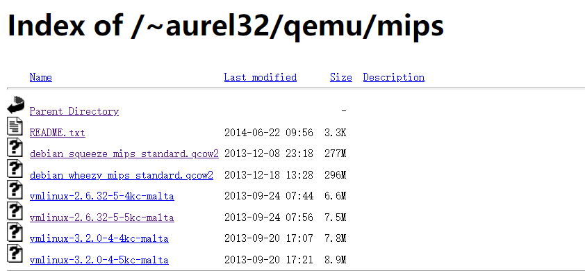
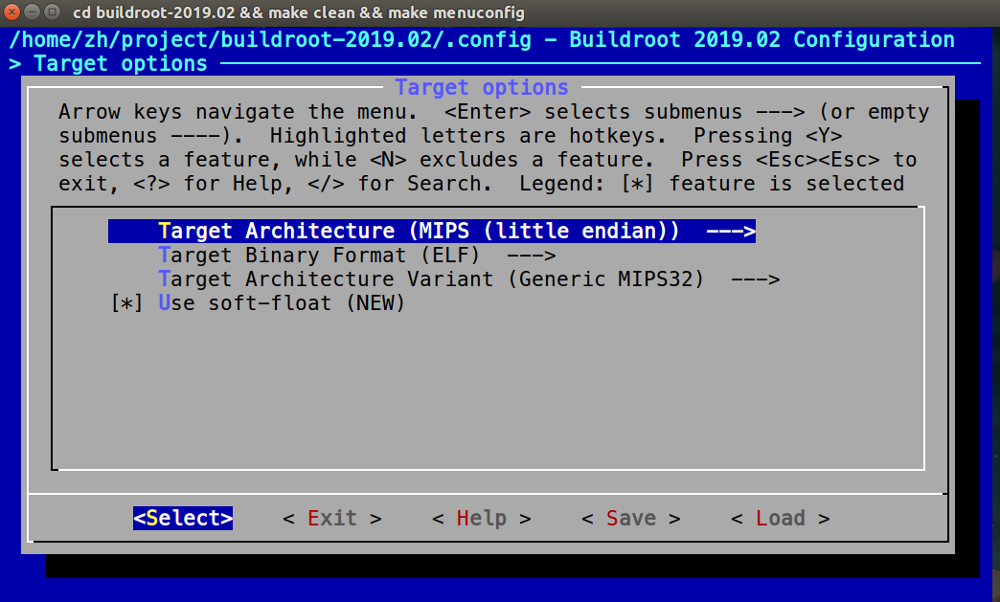
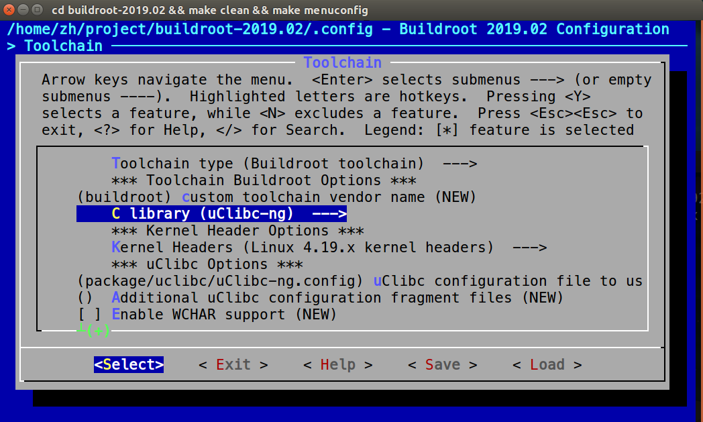
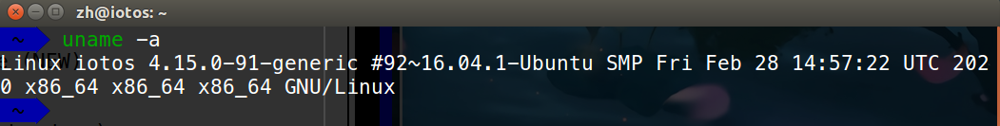
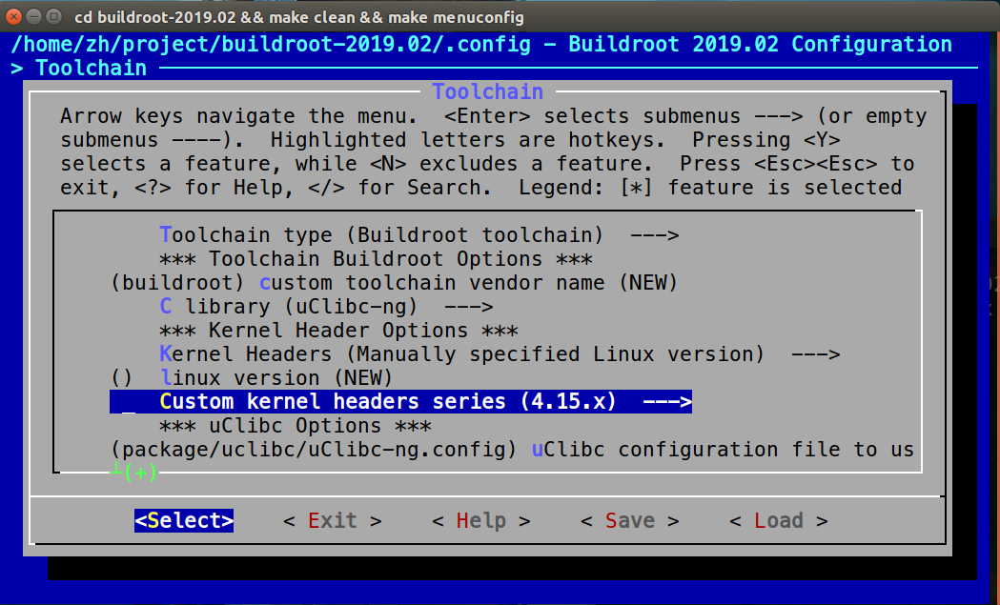
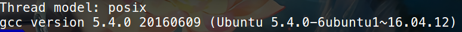
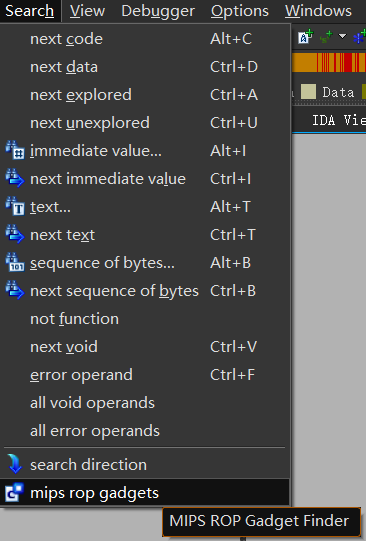

路由器漏洞挖掘环境搭建
前言
从2019年5月开始决定把物联网漏洞挖掘作为自己的课题开始，到现在也断断续续调试分析过一些漏洞，感觉一路心酸历程啊！确实踩了很多坑，恰逢最近重新搭建环境，值此良机，整理下搭建过程。
我使用的是ubuntu16.04 LTS虚拟机。
binwalk
因为利用apt-get安装binwalk会缺少很多依赖项所以还是建议根据 https://github.com/ReFirmLabs/binwalk/blob/master/INSTALL.md
git clone https://github.com/ReFirmLabs/binwalk.git
cd binwalk
# 对于Debian/Ubuntu的用户而言，很多依赖项都可以通过deps.sh安装
sudo ./deps.sh
sudo python ./setup.py install下载源代码自己编译
`sudo apt-get install git build-essential autoconfsudo git clone https://github.com/devttys0/binwalk.gitsudo apt-get install libqt4-opengl python-qt4 python-qt4-gl python-numpy python-scipy python-pipsudo pip install pyqtgraphsudo apt-get install zlib1g-dev liblzma-dev liblzo2-dev git clone https://github.com/devttys0/sasquatchcd sasquatch && sudo make && sudo make installsudo python setup.py install`安装sasquatch
一般现在binwalk完全安装时会自动带上这个sasquatch，输入这三条命令就可以了
sudo apt-get install zlib1g-dev liblzma-dev liblzo2-dev
sudo git clone https://github.com/devttys0/sasquatch
cd sasquatch && sudo make && sudo make installqemu
qemu安装
下面的步骤完全参照知世师傅的博客内容
- 直接安装qemu，直接使用系统提供的版本，ubuntu16.04一般是qemu2.5
sudo apt install libglib2.0-dev libgcrypt20-dev autoconf automake libtool
sudo apt-get install libglib2.0 libglib2.0-dev
sudo apt install -y pkg-config
sudo apt install -y libpixman-1-dev
sudo apt install -y libfdt-dev
sudo apt install libsdl2-dev
sudo apt install libsnappy-dev
sudo apt install libgtk-3-dev
sudo apt install libjpeg-turbo8-dev
sudo apt install libcurl4-openssl-dev
sudo apt install libspice-server-dev
sudo apt-get install qemu
sudo apt-get install qemu-user-static
sudo apt-get install qemu-system自己编译
git
git clone git://git.qqmu-project.org/qemu.git/qemu.git git submodule update --init pixman git submodule update --init dtc sudo apt install libglib2.0-dev libgcrypt20-dev autoconf automake libtool sudo apt-get install libglib2.0 libglib2.0-dev sudo apt install -y pkg-config sudo apt install -y libpixman-1-dev sudo apt install -y libfdt-dev sudo apt install libsdl2-dev sudo apt install libsnappy-dev sudo apt install libgtk-3-dev sudo apt install libjpeg-turbo8-dev sudo apt install libcurl4-openssl-dev sudo apt install libspice-server-dev sudo ./configure --static && sudo make -j8 && sudo make install 注: 使用configure 使用static参数的时候,依赖可能会根据不同环境导致依赖缺失,可以根据报错来解决依赖问题wget
可根据需求不同来选择不同的版本
sudo apt install libglib2.0-dev libgcrypt20-dev autoconf automake libtool sudo apt-get install libglib2.0 libglib2.0-dev sudo apt install -y pkg-config sudo apt install -y libpixman-1-dev sudo apt install -y libfdt-dev sudo apt install libsdl2-dev sudo apt install libsnappy-dev sudo apt install libgtk-3-dev sudo apt install libjpeg-turbo8-dev sudo apt install libcurl4-openssl-dev sudo apt install libspice-server-dev sudo arm-softmmu wget https://download.qemu.org/qemu-4.1.0.tar.xz tar xvJf qemu-4.1.0.tar.xz cd qemu-4.1.0 sudo ./configure --target-list=arm-softmmu,mips-softmmu,mipsel-softmmu --audio-drv-list=alsa,pa sudo make -j8 sudo make install这里贴出官方的安装教程
To download and build QEMU 4.1.0:
wget https://download.qemu.org/qemu-4.1.0.tar.xz tar xvJf qemu-4.1.0.tar.xz cd qemu-4.1.0 ./configure makeTo download and build QEMU from git:
git clone https://git.qemu.org/git/qemu.git cd qemu git submodule init git submodule update --recursive ./configure makeDebian/Ubuntu:
apt-get install qemu
qemu网络配置
sudo apt-get install bridge-utils #虚拟网桥工具
sudo apt-get install uml-utilities # UML（User-mode linux）工具sudo vi /etc/network/interfaces
写入下面的内容：
# interfaces(5) file used by ifup(8) and ifdown(8)
auto lo
iface lo inet loopback
auto ens33
iface ens33 inet manual
up ifconfig ens33 0.0.0.0 up
auto br0
iface br0 inet dhcp
bridge_ports ens33
bridge_maxwait 0改完之后要重启网卡才能生效：
sudo /etc/init.d/networking restart
配置 qemu 虚拟机的网卡信息：
sudo vi /etc/qemu-ifup
将原来的内容注释，换成下面的内容：
#! /bin/sh
echo "Executing /etc/qemu-ifup"
echo "bridge networking"
echo "Bringing up $1 for bridge mode"
sudo /sbin/ifconfig $1 0.0.0.0 promisc up
echo "Adding $1 to br0"
sudo /sbin/brctl addif br0 $1
sleep 3qemu-mips对应包下载
从 https://people.debian.org/~aurel32/qemu/mips/下载对应的debian mips qemu镜像

选择debian_squeeze_mips_standard.qcow2和vmlinux-2.6.32-5-4kc-malta.
使用qemu系统模式加载之前下载的内核：qemu-system-mips对于mips的镜像。
sudo qemu-system-mips -M malta -kernel vmlinux-2.6.32-5-4kc-malta -hda debian_squeeze_mips_standard.qcow2 -append "root=/dev/sda1 console=tty0" -net nic,macaddr=00:16:3e:00:00:01 -net tap可以看到一个qemu虚拟机，用root/root登录进去：

nano /etc/network/interfaces将网卡eth0改为eth1：
/etc/init.d/networking restart看是否配置成功，不然可以重启qemu试试是否自动配置好了eth1的网卡信息。
进去虚拟机之后，如果发现只有网卡的其他信息、没有 IP 地址，可以手动配置一下 eth1 网卡的 IP：
ifconfig eth1 192.168.91.130/24 #跟宿主机在同一个网段内之后ping一下外面的主机看看是否联通。宿主机也可以通过ssh root@192.168.91.130远程登陆进去。
以后的文章可能会细讲，qemu的网络配置和通信。
buildroot
下载buildroot安装包（我这里选了一个2019.02版本）
wget http://buildroot.net/downloads/buildroot-2019.02.tar.gz 或者直接从http://buildroot.net/downloads/下载解压安装包
tar -zxvf buildroot-2019.02.tar.gz进入安装包，配置
cd buildroot-2019.02 && make clean && make menuconfig进入配置界面

首先根据想要调试的目标架构进行配置Target options，我因为要调试mips小端架构，所以选择如下：

Build options选择默认就好，进入Toolchain进入配置
C library选择uClibc-ng，因为二进制文件是使用此库编译的，所以大多数设备都是用此C库

其中的kernel Headers根据查看ubantu操作系统内核进行选择
uname -a
选择Manually specified然后找到4.15.x并选择

gcc 版本选择
gcc -v
选择gcc 5.x

最后启用“为主机启用交叉编译的gdb”按Y选中,括号内会有*号。

最后
sudo make -j8配置环境变量
在/etc/profile文件中加入
export PATH=$PATH:/home/yourname/buildroot-2019.02.2/output/host/bin最后
source /etc/profile检验是否能编译生成mipsel文件
#include <stdio.h> int main(){ printf("demo\n"); }利用
mipsel-linux-gcc demo.c -static -o demo得到是小端文件，并且能直接运行。~/Desktop/IoT : mipsel-linux-gcc demo.c -static -o demo ~/Desktop/IoT : file demo demo: ELF 32-bit LSB executable, MIPS, MIPS32 version 1 (SYSV), statically linked, not stripped如果没有加
-static将需要动态链接库
这时我们只需要找到该库，使用
qemu-mipsel -L /Your_Path/buildroot/output/target/ hello即可运行。
Ghidra
Ghidra是由美国国家安全局（NSA）研究部门开发的软件逆向工程（SRE）套件，用于支持网络安全任务。 该反汇编工具类似于我们常用的IDA，不过其基于JAVA开发，是一款适用于Windows、Mac和Linux的跨平台反汇编工具，用户还可以使用Java或Python开发自己的Ghidra插件或者脚本。
安装条件
硬件条件:4GB内存;1GB硬盘空间
软件条件:Java 11+
下载地址
百度盘下载地址：https://pan.baidu.com/s/1zHWilk5NiTuzDItQhI8nnQ （提取码 ：8upz）
github地址： https://github.com/NationalSecurityAgency/Ghidra
项目主页： https://Ghidra-sre.org 可以直接从上面下载最新的ghidra
在Ubuntu16.04中同样可以建立一个软链接进行快捷键启动。
ln -s /home/yourname/project/ghidra_9.1.2_PUBLIC_20200212/ghidra_9.1.2_PUBLIC/ghidraRun /usr/bin/ghidraGhidra插件使用
可以学习Freebuf上平安银河实验室提供的免费公开课，然后其中的插件可以参照平安银河实验室写的Ghidra_scriptshttps://github.com/PAGalaxyLab/ghidra_scripts
Firmadyne
Firmadyne是一个基于qemu的Linux嵌入式系统自动仿真工具。利用它可以主要可以模拟路由器固件的运行。它拥有自己自己预编译好的mips架构Linux内核。
github传送门： https://github.com/firmadyne/firmadyne 里面有详细的安装和使用说明。
也可以参考这篇帖子进行安装使用： https://chuansongme.com/n/1009525252762
到此环境差不多安装完了。
IDA及其插件
如果想把IDA直接安装在linux中需要安装wine， 工作目录在~/.wine。
wine安装和使用
`sudo apt-get install wine`wine中安装使用IDA
直接安装或者将安装好的IDA整个包拖进ubuntu16.04，然后用wine idaq.exe就能启动起来，但是会出现缺少python27.dll
module:import_dll Loading library python27.dll (which is needed by L"Z:\\home\\anciety\\ida\\plugins\\python.plw") failed (error c000007b).在宿主机找到该文件并放在IDA的根目录下，还是出现同样的问题，网上还说从https://www.dllme.com/dll/files/python27_dll.html下载一个python27.dll放在IDA根目录下，但是之后再启动，会出现`IDAPython: importing “site” failed问题， 解决方法就是需要设置一个环境变量，如果在/usr/bin`下写了一个脚本来启动ida，那么解决方法比较简单，也不会影响linux，否则如果直接设置环境变量会影响linux的python运行。
脚本:
#!/bin/bash
export PYTHONPATH=/usr/lib/python2.7 && wine yourpath/idaq.exe如果上面方法还是报错，网上找到解决方案是在wine里面重新安装python2.7。
curl -O https://www.python.org/ftp/python/2.7.15/python-2.7.15.msi
wine msiexec /i python-2.7.15.msi解决上述问题之后，写一个快捷命令启动脚本idaq
#!/bin/bash
wine yourpath/idaq.exe之后建立一个软连接以方便在任何窗口输入idaq迅速启动
ln -s pathof上面的快捷脚本 /usr/bin/idaq同样给idaq64.exe建立一个启动脚本和软连接。
安装keypatch.py插件
主要问题是安装keystone, 在http://www.keystone-engine.org/download/ 下载32位keystone-0.9.1-python-win32.msi下载并安装，应该能使用keypatch.py插件，但是有时还是会爆出缺少msvcp120.dll和msvcr120.dll动态链接库的问题，直接在主机找到并复制到IDA根目录就能解决。
还有很多运行错误包括缺少DLL都可以从本机找到放进IDA根目录解决，其他运行错误根据提示进行相应的解决。
安装mipsrop等插件
安装mipsrop插件，以方便IDA调试，现在支持IDA7.0+
https://github.com/devttys0/ida/tree/master/plugins/mipsrop把下载的ida/plugins目录下所有后缀为:,py“d的文件复制到IDA pro插件目录：
sudo cp –r `find /home/yale/a/ida/plugins –iname *.py` /home/yale/ida/ida/plugins/将scrpit复制到idapro根目录下
sudo mkdir /home/yale/ida/ida/plugins/scripts
sudo cp –r ida/scripts ida/scripts/下载之后放在ida的plugins中，我本机用的IDA7.1，wine虚拟机用的IDA6.8都能正常使用

也有师傅改了之前的mipsrop以支持IDA6.x和IDA7.x
https://github.com/fuzzywalls/ida调试工具gdb-multiarch、pwndbg
首先是安装pwndbg，peda对于mips的动态调试没有太好的支持。pwndbg的安装命令：
git clone https://github.com/pwndbg/pwndbg
cd pwndbg
./setup.sh接着是安装gdb-multiarch，安装命令：
sudo apt-get install gdb-multiarch安装完毕后，整个远程动态调试的过程为：
- 使用命令
qemu-mipsel -g 1234 -L /Your_Path/buildroot/output/target/ demo将程序运行起来，-g 1234`的意思表示为监听端口1234，用于远程调试。 - 使用
gdb-multiarch ./demo来开启gdb。 - 进入gdb后，使用命令
target remote 127.0.0.1:1234，即开始调试程序。
用gdb-multiarch调试，相较于ida远程调试来说，对于用习惯了gdb调试的人来说应该会方便不少，而且还有pwndbg的支持。